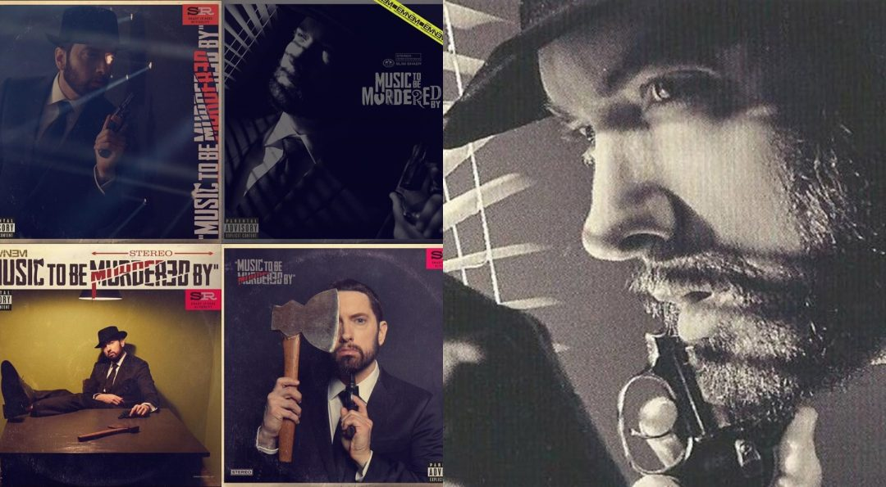

Full list of people Eminem mentioned or dissed on his studio albums
By
Stanley Mitchell -
January 14, 2019

The Ben’s Big Blog project, a statistical analysis of hip-hop music, decided to count all the disses and
attacks
Eminem made on people throughout all his ten studio albums. Let’s see what they’ve come up with.
In 10 studio albums, Eminem dissed 135 people and associations, that’s 13.5 per-album. Analysis by Ben’s
Big
Blog.
In 10 studio albums, Eminem dissed 135 people and associations, that’s 13.5 per-album. Analysis by Ben’s
Big Blog.
 Eminem Surpassed 55 Million Followers on Spotify
Eminem Surpassed 55 Million Followers on Spotify